Dokumentasi Pengujian Sistem Toko Online Bagisto
Laporan alur kerja kami: dari instalasi, persiapan database terpisah, mempelajari sistem, menemukan celah, menguji, sampai memperbaiki dua masalah dan mencatatnya di Git.
1 Apa yang kami uji dan kenapa
Kami menginstal Bagisto, aplikasi toko online open source berbasis Laravel, langsung dari GitHub (github.com/bagisto/bagisto), lalu menjalankannya secara lokal di laptop memakai XAMPP. Kami memilih Bagisto karena fiturnya lengkap seperti toko online sungguhan: login pelanggan, keranjang belanja, stok barang, checkout, ongkir, kupon, dan halaman admin untuk mengatur harga. Banyak bagian yang bisa dijadikan bahan latihan test case.
Versi yang kami pakai adalah Bagisto 2.3.19, bukan versi paling baru. Versi terbaru (2.5) membutuhkan PHP 8.4, sedangkan PHP di XAMPP kami versi 8.2. Versi 2.3.19 adalah versi terakhir yang masih berjalan di PHP 8.2.
Supaya toko terlihat "hidup", kami mengisinya dengan data contoh: sekitar 195 produk lengkap dengan gambar dan harga Rupiah, 25 pelanggan, dan 40 pesanan.
2 Persiapan: memisahkan database asli dan database testing
Sebelum menguji, kami memastikan pengujian tidak merusak data toko yang asli.
- Backup database asli. Database toko (
bagisto) dicadangkan keD:\Backup\bagisto_utama_20261108.sql. - Membuat database khusus testing. Kami membuat database terpisah
bagisto_test. Database ini tidak disalin dari database asli, melainkan diisi ulang dari awal dengan data bawaan Bagisto (kategori, bahasa, mata uang, akun admin), supaya kondisinya bersih dan sama setiap kali pengujian dimulai. - Mengarahkan aplikasi ke database testing. Kami membuat file pengaturan
.env.testingagar setiap test otomatis memakaibagisto_test, lalu mengecek ulang bahwa yang aktif saat test memangbagisto_test. - Menghindari perintah berbahaya. Petunjuk Bagisto menyarankan
bagisto:install. Setelah kami pelajari, perintah itu selalu membaca pengaturan database asli lalu mengosongkannya. Perintah itu tidak kami pakai; kami memakai perintah migrasi biasa yang hanya menyentuhbagisto_test. - Membuktikan data asli aman. Jumlah produk, pesanan, dan pelanggan di database asli dicatat sebelum dan sesudah pengujian. Hasilnya selalu sama: 195 produk, 40 pesanan, 26 pelanggan.
bagisto_test juga kembali kosong setelah pengujian.3 Mempelajari alur sistem
Sebelum membuat test case, kami mempelajari bagaimana Bagisto bekerja di bagian-bagian penting:
| Bagian | Yang kami pelajari |
|---|---|
| Login & daftar akun | Password minimal 6 karakter, email harus unik, akun nonaktif atau belum diverifikasi tidak boleh masuk |
| Keranjang | Menambah, mengubah jumlah, dan menghapus barang, termasuk lewat API (POST, PUT, DELETE ke api/checkout/cart) |
| Stok barang | Barang tidak boleh dibeli melebihi stok; stok yang sudah dipesan orang lain ikut dikurangi |
| Checkout | Urutan alamat → ongkir → pembayaran → pesanan, serta aturan nomor telepon dan kode pos |
| Hak akses | Pelanggan A seharusnya tidak bisa melihat atau mengubah keranjang dan pesanan pelanggan B |
| Harga produk (admin) | Aturan harga di admin, misalnya harga diskon harus lebih kecil dari harga normal |
Kami juga menjalankan test bawaan yang sudah disediakan Bagisto: 132 test lolos semua. Jadi kami tahu sistemnya stabil sebelum kami uji lebih jauh.
4 Dari mana kami menemukan celah untuk diuji
1. Membaca aturan validasi
Di alamat checkout, email hanya diwajibkan "harus diisi" tanpa dicek formatnya. Dari situ kami bertanya: bagaimana kalau diisi bukan-email?
2. Mencoba nilai batas
Stok 5: kami coba beli 4, 5, dan 6. Kode pos minimal 2 karakter: kami coba 1 dan 2. Harga maksimal 99.999.999,9999: kami coba tepat di batas dan sedikit di atasnya.
3. Mencoba sebagai orang lain
Login sebagai pelanggan B, lalu mencoba menghapus isi keranjang, membuka pesanan, dan mencetak invoice milik pelanggan A.
4. Mencari bagian yang belum dites
Bagian penolakan stok ("stok tidak cukup") ternyata belum pernah dijalankan oleh test bawaan, jadi kami prioritaskan.
5 Cara kami menguji
Pengujian dilakukan dengan test otomatis memakai Pest (alat testing untuk Laravel). Setiap test mengirim permintaan ke aplikasi seperti yang dilakukan browser atau aplikasi lain:
| Metode | Dipakai untuk |
|---|---|
POST | Menambah barang ke keranjang, mengisi alamat, login, daftar akun |
PUT | Mengubah jumlah barang, mengubah harga produk di admin |
GET | Membuka halaman pesanan dan invoice |
DELETE | Menghapus barang dari keranjang |
Untuk setiap kasus kami mencatat tiga hal:
- Apa yang seharusnya terjadi. Diambil dari aturan sistem, bukan dari hasil sistem.
- Apa yang benar-benar terjadi. Kode respons, pesan, dan isi database.
- Statusnya: lolos atau gagal.
Setiap hasil disimpan sebagai file bukti. Semua test dijalankan dua kali, dan sebuah masalah baru disebut defect bila gagal di kedua percobaan dengan perilaku yang sama.
| Bagian | Jumlah kasus |
|---|---|
| Hak akses | 14 |
| Stok | 12 |
| Keranjang | 21 |
| Alamat checkout | 21 |
| Ongkir, pesanan, minimum order | 14 |
| Login & daftar akun | 16 |
| Harga produk | 14 |
| Total | 112 |
6 Hasil pengujian
Dari 112 kasus, 90 lolos dan 22 gagal. Ke-22 kegagalan itu berasal dari 15 masalah, karena satu masalah bisa muncul di beberapa kasus.
6.1 Bagian yang ternyata aman
Aman Stok barang
12 dari 12 kasus lolos. Barang tidak bisa dibeli melebihi stok, termasuk saat ditambah sedikit-sedikit atau diubah jumlahnya.
Aman Pesanan orang lain
Pelanggan B tidak bisa membuka, membatalkan, memesan ulang, atau mencetak invoice pesanan A; sistem menjawab "tidak ditemukan".
Aman Keranjang orang lain
Pelanggan B tidak bisa menghapus atau mengubah barang di keranjang A.
Aman Daftar akun & login
Password kurang dari 6 karakter ditolak, email ganda ditolak, akun nonaktif tidak bisa masuk.
6.2 Masalah yang kami temukan
| No | Bagian | Yang kami temukan | Cara mengujinya | Status |
|---|---|---|---|---|
| 1 | Harga (admin) | Harga di atas Rp99.999.999 diterima, tapi diam-diam tersimpan menjadi 99.999.999,9999 | Ubah harga menjadi 100.000.000 lewat PUT, lalu cek database | Diperbaiki v1.0.2 |
| 2 | Minimum order | Opsi "hitung dengan diskon" malah mengurangi pajak: subtotal 100 + pajak 10 dihitung 90 | Jalankan fungsi perhitungan dengan angka contoh | Diperbaiki v1.0.1 |
| 3 | Minimum order | Minimum 100,50 dianggap terpenuhi oleh belanja 100,25 karena angka desimal dibuang | Sama seperti nomor 2 | Terbuka |
| 4 | Harga (admin) | Harga "0" diterima, tapi tersimpan kosong (NULL) | Ubah harga menjadi 0 lalu cek database | Terbuka |
| 5 | Keranjang | Ubah jumlah menjadi 0 atau −1 menghapus barang, padahal sistem membalas "berhasil" | PUT jumlah 0, cek apakah barang masih ada | Terbuka |
| 6 | Keranjang | Menambah barang tanpa menyebut jumlah ditolak dengan pesan error PHP, padahal seharusnya otomatis 1 | POST tanpa quantity | Terbuka |
| 7 | Keranjang & checkout | Tujuh permintaan membuat server error (500), misalnya cek ongkir tanpa keranjang, hapus kupon tanpa keranjang, dan alamat tanpa data billing | Kirim permintaan dalam kondisi tidak lengkap | Terbuka |
| 8 | Keranjang | Ubah jumlah yang gagal tetap dibalas "OK" (200) | PUT tanpa data jumlah | Terbuka |
| 9 | Checkout | Pesan tanpa memilih pembayaran dibalas error server (500). Pesanan memang tidak dibuat | Checkout sampai akhir tanpa pembayaran | Terbuka |
| 10 | Hak akses | Menghapus barang milik orang lain dibalas "berhasil dihapus", padahal barangnya tidak terhapus | Login sebagai B, hapus barang milik A | Terbuka |
| 11 | Checkout | Format email di alamat tidak dicek; bukan-email diterima | Isi alamat dengan email asal | Terbuka |
| 12 | Checkout | Nama lebih dari 255 huruf terpotong tanpa peringatan | Isi nama 256 huruf | Terbuka |
| 13 | Hak akses | Checkout menerima nomor alamat milik pelanggan lain. Data alamatnya tidak bocor, hanya nomornya yang tercatat | Login sebagai B, kirim nomor alamat A | Terbuka |
| 14 | Login | Akun dari toko (channel) lain ditolak lewat web, tapi berhasil masuk lewat API | Buat channel kedua, login lewat web dan API | Terbuka |
| 15 | Login | Tidak ada batas percobaan login; 10 kali salah berturut-turut tidak diblokir | Login dengan password salah 10 kali | Terbuka |
7 Perbaikan pertama — v1.0.1 (minimum order)
Kami memperbaiki masalah nomor 2.
- Penyebab: di file
Cart.php, bagian yang seharusnya mengurangi diskon ternyata juga mengurangi pajak. Sepertinya baris itu salah salin dari bagian pajak. - Perbaikan: satu baris yang salah itu dihapus.
- Bukti sebelum: kami menulis test yang gagal lebih dulu. Subtotal 100 + pajak 10 harusnya 100, tetapi hasilnya 90.
- Bukti sesudah: test yang sama lolos, dan semua test keranjang serta checkout bawaan tetap lolos (42/42, 38/38, 11/11).
- Git: branch
fix/min-order-include-discount, tag v1.0.1.
8 Perbaikan kedua — v1.0.2 (harga produk)
Kami memperbaiki masalah nomor 1, karena dampaknya paling besar untuk toko berbasis Rupiah. Harga di atas Rp100 juta sangat mungkin terjadi, misalnya untuk jam tangan mewah atau laptop.
- Penyebab: aturan harga di admin hanya mengecek format angka, tanpa batas maksimal. Kolom harga di database hanya muat sampai 99.999.999,9999, dan database diatur untuk memotong angka yang terlalu besar tanpa error.
- Perbaikan: kami menambahkan aturan "harga maksimal 99.999.999,9999" di form produk admin. Sekarang harga yang terlalu besar ditolak dengan pesan "The price field must not be greater than 99999999.9999."
- Bukti sebelum dan sesudah: harga 100.000.000 sebelumnya tersimpan terpotong; sekarang ditolak dan harga lama tidak berubah. Harga normal (150.000), harga terkecil (0,0001), dan harga tepat di batas tetap bisa disimpan.
- Tidak ada yang rusak: 52 test bawaan halaman produk admin lolos semua, baik sebelum maupun sesudah perbaikan.
- Git: branch
fix/harga-batas-maksimum, tag v1.0.2.
9 Pengecekan ulang setelah kedua perbaikan
- Test kami: kegagalan turun dari 22 menjadi 20. Yang berubah dari gagal ke lolos hanya dua kasus yang memang diperbaiki. Tidak ada test yang sebelumnya lolos lalu menjadi gagal.
- Semua test bawaan Bagisto yang terkait tetap lolos: 132/132, ditambah 52/52 test admin produk.
10 Bukti screenshot pengujian
Screenshot diambil otomatis dengan browser Chrome yang dijalankan oleh skrip, supaya langkahnya bisa diulang persis sama. Untuk pengujian lewat browser, kami menjalankan toko di alamat http://127.0.0.1:8001 yang memakai database salinan bagisto_uji. Database ini disalin dari backup database asli, sehingga produk, pelanggan, dan pesanannya sama persis, tetapi semua perubahan saat pengujian tidak menyentuh database asli. Kami sempat memastikan server benar-benar memakai database salinan dengan membuat akun khusus yang hanya ada di bagisto_uji, lalu mencoba login dengan akun itu.
Di database salinan, stok produk Red Nail Polish kami ubah menjadi 5 supaya batas stok mudah diuji. Semua screenshot ada di folder dokumentasi/screenshot/.
A. Pengujian lewat halaman toko


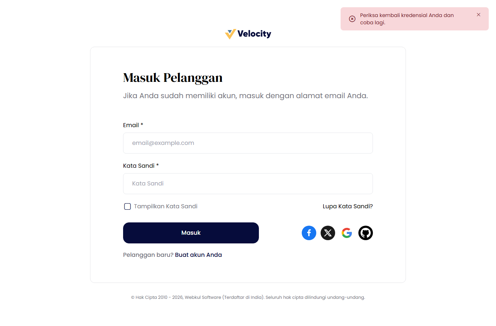


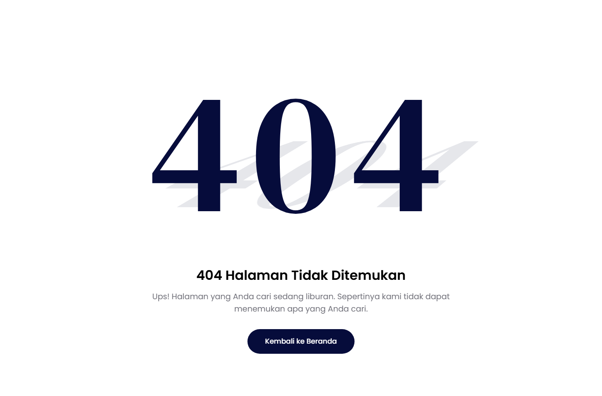


B. Pengujian di halaman admin (setelah perbaikan v1.0.2)

C. Pengujian API (POST / PUT / GET / DELETE)
Permintaan dikirim dari dalam browser ke API toko, lalu permintaan dan jawabannya ditampilkan dalam satu panel. Label hijau berarti jawaban berhasil (2xx), kuning berarti ditolak (4xx), dan merah berarti error server (5xx).

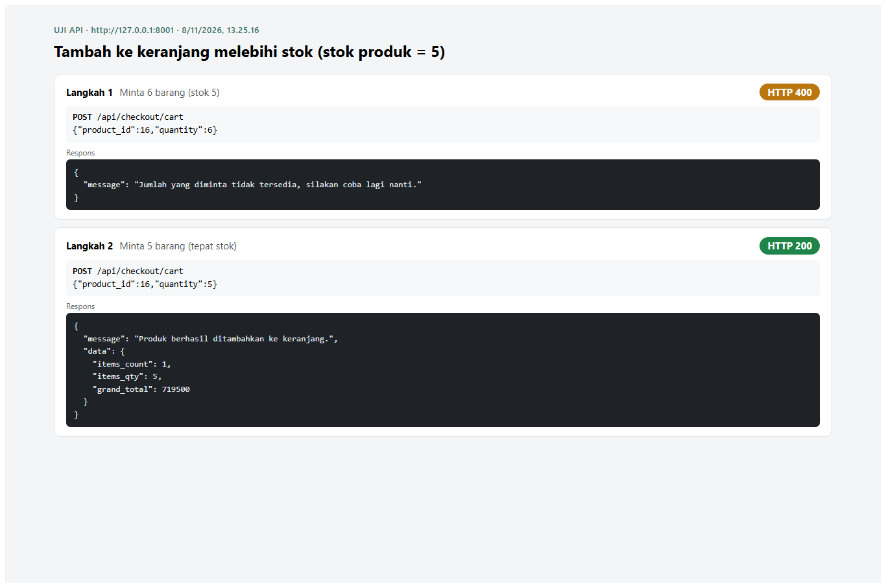

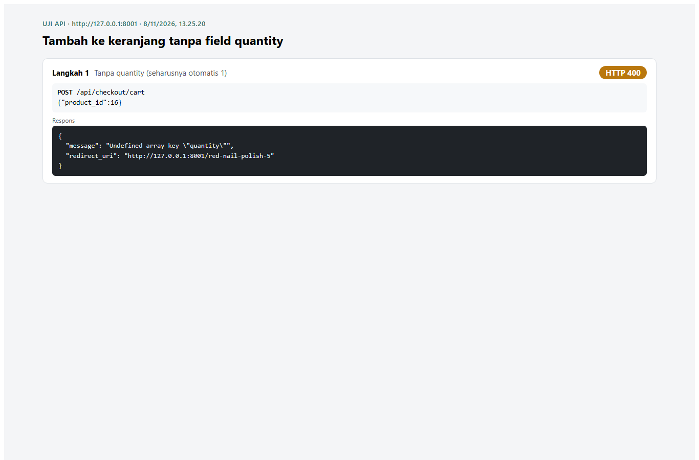

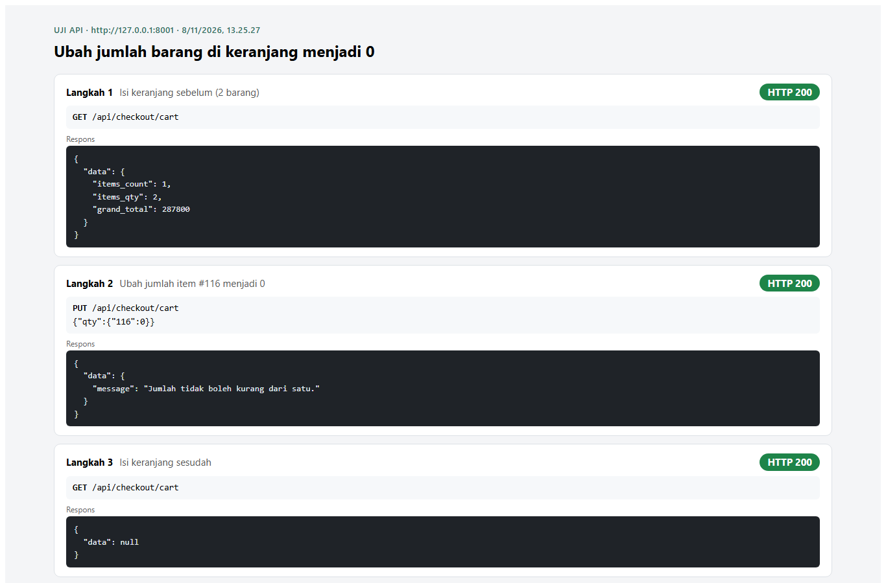

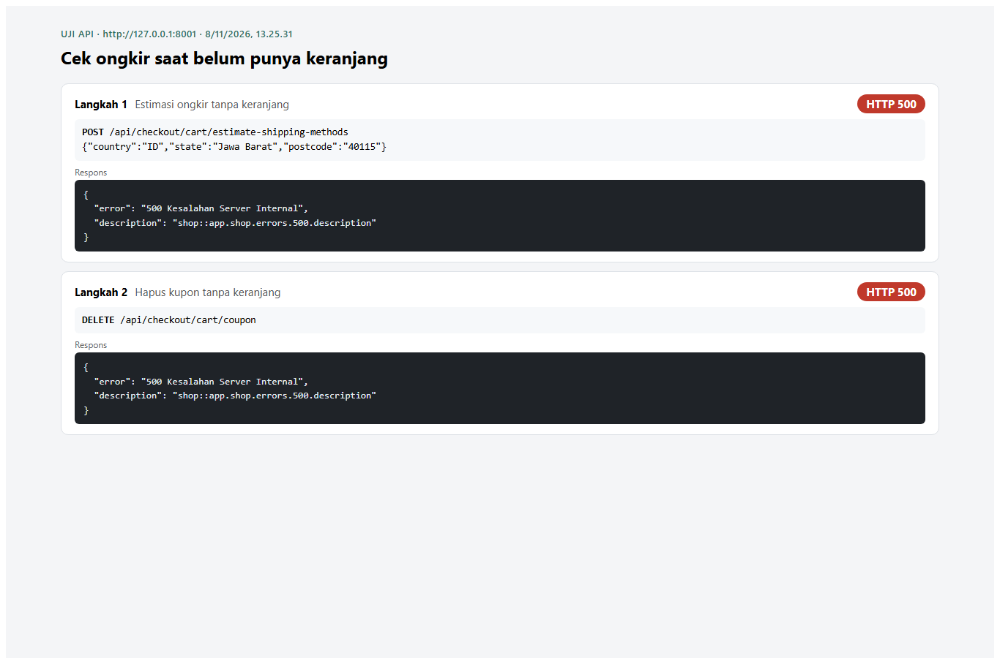

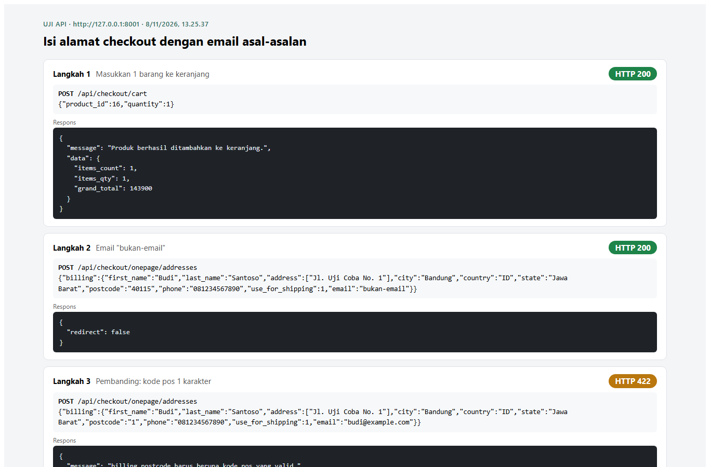
D. Hasil test otomatis (Pest)

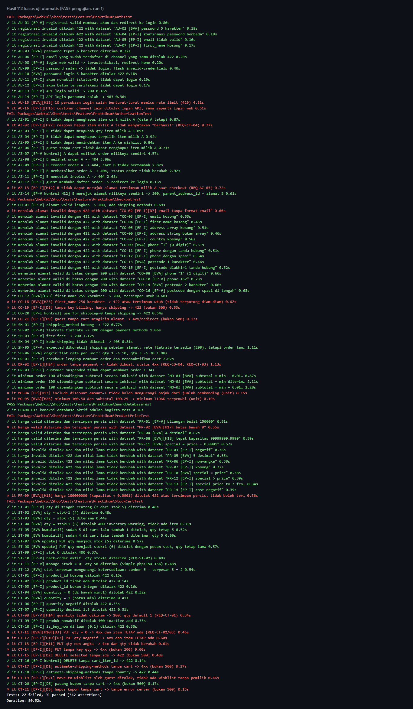

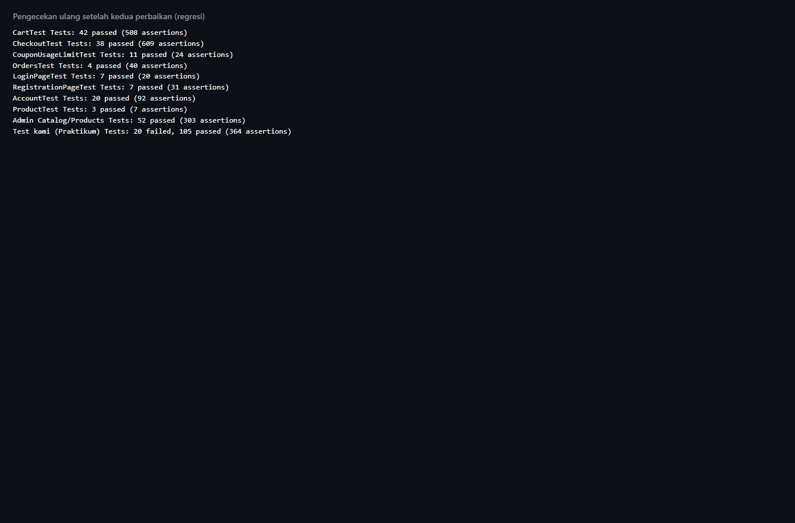

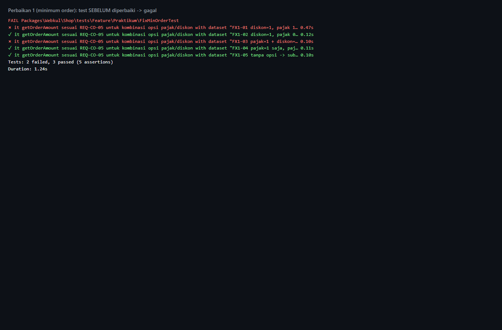


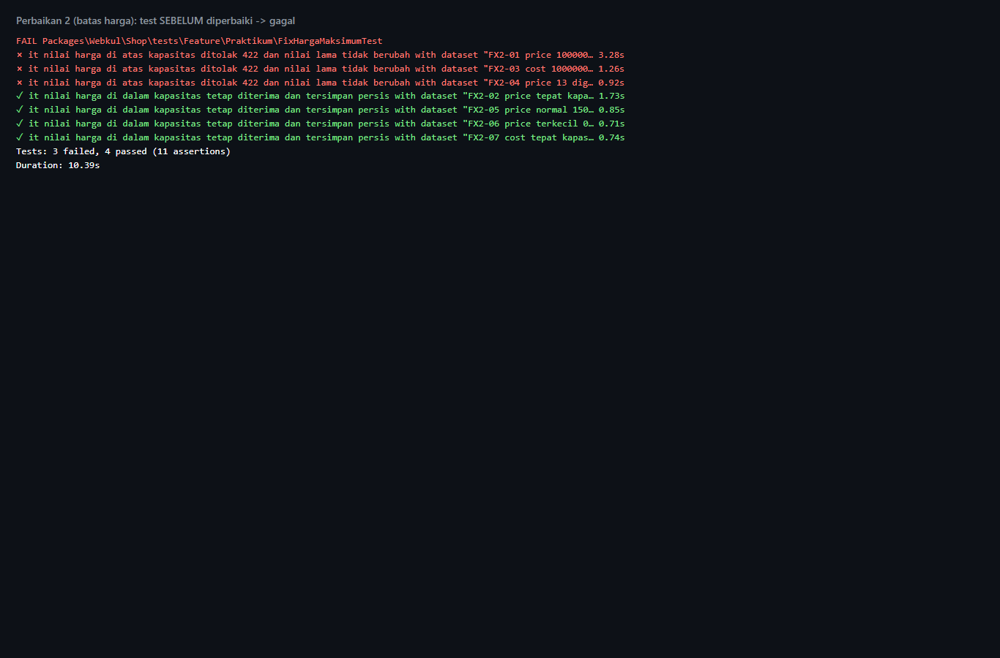

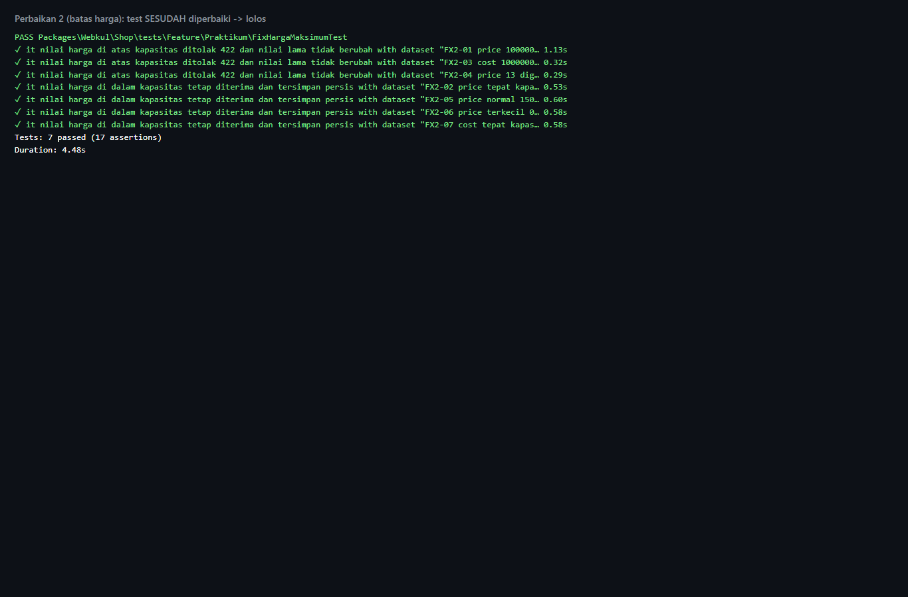
11 Riwayat Git
Semua pekerjaan ada di branch praktikum. Perubahan kode Bagisto secara total sangat kecil: hanya 2 file, 11 baris ditambah dan 2 baris dihapus.
git remote add saya <url-repo> dan git push saya praktikum --tags.12 Kesimpulan
- Bagian paling penting toko, yaitu stok dan hak akses pesanan, ternyata aman.
- Masalah yang paling banyak berkaitan dengan penanganan input yang tidak lengkap atau tidak wajar: sistem sering menjawab dengan error server, bukan pesan yang jelas.
- Masalah yang paling berbahaya ada di penyimpanan angka: harga besar terpotong diam-diam. Masalah ini sudah kami perbaiki.
- Yang belum kami kerjakan: pengujian kupon, pengujian tampilan dengan browser otomatis, pengujian kecepatan, dan perbaikan 13 masalah lainnya.
Lampiran: semua file teknis (dokumen rinci, hasil per kasus, laporan coverage, skrip bantu) ada di folder lampiran-teknis/. File test ada di packages/Webkul/Shop/tests/Feature/Praktikum/.